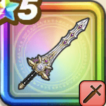

メタルキングの剣
攻略班 9.0点 / いなずま斬りいなずま回転斬り会心必中のかまえ王の一閃・光爆王の一閃・轟雷キングタイム
くわしい特徴
【レベル別習得スキル】 Lv1【バトマス】攻撃力+5 Lv1【魔法戦士】さいだいMP+5 Lv1いなずま斬り（消費MP：3）いなずまを剣に纏わせて斬り敵1体に威力130%のデイン属性斬撃ダメージを与える Lv10いなずま回転斬り（消費MP：12）敵全体に120%のデイン属性斬撃ダメージを与える Lv20会心必中のかまえ（消費MP：30）次のターンの斬撃・体技ダメージが上がり、会心の一撃になる。さらにガードやみかわしされなくなる Lv30王の一閃・光爆（消費MP：46）敵全体に130%のイオ属性斬撃ダメージを3回与え、メタル系なら+10のダメージを3回与える Lv30王の一閃・轟雷（消費MP：46）敵全体に130%のデイン属性斬撃ダメージを3回与え、メタル系なら+10のダメージを3回与える Lv35鳥系へのダメージ+5% Lv35物質系へのダメージ+5% Lv40会心率+2% Lv45攻撃力+12 Lv50キングタイム（消費MP：8）戦闘開始時にまれに味方全体を優先して行動させ、敵にメタル系が含まれているなら味方全体を優先して行動させる 【限界突破スキル】 1凸スキルの斬撃・体技ダメージ+7% 2凸スキルの斬撃・体技ダメージ+7% 3凸スキルの斬撃・体技ダメージ+7% 4凸スキルの斬撃・体技ダメージ+7%